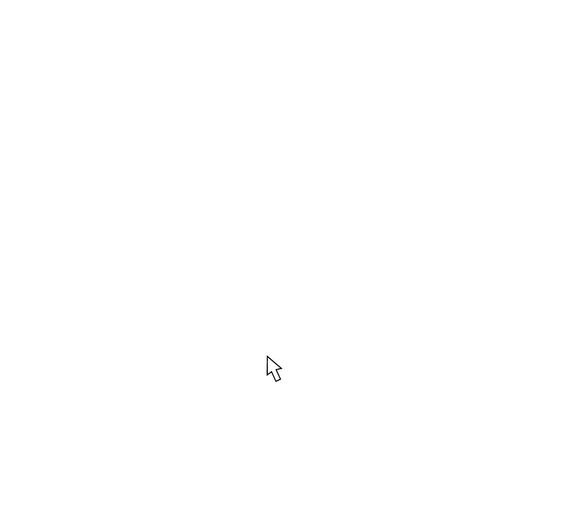
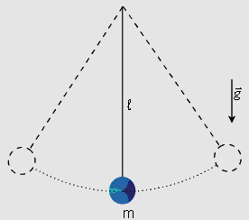

1- Estudamos três tipos de forças: contato, atração e gravidade. Com base nas imagens escreva um pequeno texto sobre cada uma delas.
2-a) Explique, de acordo com o roteiro, porque massa e peso não são a mesma coisa.
2-b)Preencha a tabela com a sua massa o seu peso nos seguintes planetas, considerando que : P=m.g
|
Terra |
Marte |
Mercúrio |
Júpiter |
| Força da Gravidade |
10m/s² |
3,9m/s² |
2,8m/s² |
25m/s² |
| Massa |
|
|
|
|
| Peso |
|
|
|
|
2-c) construa um gráfico com as informações da tabela e assinale onde o seu peso é maior e onde é menor e explique porque isso ocorreu.
demonstração

3- Um pêndulo simples é formado por um fio que tem uma de suas extremidades fixa em um suporte e a outra presa a um corpo qualquer. Se soltarmos o corpo de uma determinada altura ele descreverá um movimento oscilatório. Quanto maior a altura do qual o pendulo for solto, ou seja, quanto maior o angulo mais longo será o caminho percorrido para completar uma oscilação, porém ele ganhará mais velocidade, assim passa mais rápido pelo ponto mais baixo da trajetória e sobe com maior velocidade, portanto apesar de o pendulo percorrer uma distancia maior, a velocidade mais elevada faz com que o tempo de oscilação seja praticamente o mesmo. Se o corpo tiver uma massa grande ele será atraído com maior força pela gravidade, porém mais difícil para esse objeto ser acelerado. Dessa
forma, podemos afirmar que o período de oscilação do pêndulo não varia perceptivelmente com a mudança do valor da altura (ou ângulo) de soltura do pêndulo nem com o da massa do corpo.

a) O período de um pêndulo depende de quais grandezas físicas? Justifique.
b) Se levássemos um balanço para a Lua, ele teria a mesma frequência que na Terra, considerando-se que seja solto da mesma altura? Justifique.
c) Considerando a força da gravidade do exercício 2b, escreva o nome dos planetas em ordem crescente em relação ao período de oscilação dos pêndulos.
4- leia este texto:
"...como, por exemplo, o nosso Sistema Solar que tem um diâmetro aproximado de 100000000000 metros. E isso é muito pequeno se comparado com o tamanho da Galáxia onde vivemos com seus incríveis 100000000000000000000 metros de diâmetro. No entanto, ao lembrarmos que o Universo visível deve ter cerca de 100000000000000000000000000 metros de diâmetro, vemos que tamanhos assombrosos estão incluídos no estudo da Astronomia. Daí pensamos que é melhor estudar biologia pois a molécula do DNA tem apenas 0,0000001 metro, muito mais fácil de lidar. O problema é que a astronomia não é uma profissão perigosa enquanto que a biologia... Imagine que os biólogos têm a coragem de lidar com vírus que medem apenas 0,000000001 metro e são terrivelmente mortais. E se, por distração, um biólogo deixar um desses vírus cair no chão do laboratório? Nunca mais irá encontrá-lo!....".
leia o mesmo texto escrito de outra forma:
"...como, por exemplo, o nosso Sistema Solar que tem um diâmetro aproximado de 100 bilhões de metros. E isso é muito pequeno se comparado com o tamanho da Galáxia onde vivemos com seus incríveis 100 milhões de trilhões de metros de diâmetro. No entanto, ao lembrarmos que o Universo visível deve ter cerca de 100 milhões de bilhões de bilhões de metros de diâmetro, vemos que tamanhos assombrosos estão incluídos no estudo da Astronomia. Daí pensamos que é melhor estudar biologia pois a molécula do DNA tem apenas 1 décimo milionésimo do metro, muito mais fácil de lidar. O problema é que a astronomia não é uma profissão perigosa enquanto que a biologia... Imagine que os biólogos têm a coragem de lidar com vírus que medem apenas 1 bilionésimo do metro e são terrivelmente mortais. E se, por distração, um biólogo deixar um desses vírus cair no chão do laboratório? Nunca mais irá encontrá-lo!...."
Melhorou um pouquinho, não? Entretanto ainda é difícil comparar os números descritos por palavras quando tratamos com valores tão elevados, no caso da astronomia, ou tão pequenos, como ocorre com a biologia. Para facilitar ainda mais a compreensão de textos como esses, os cientistas passaram a usar uma forma compacta para escrever números muito grandes ou muito pequenos, a chamada notação científica ou notação exponencial. A notação científica ajuda a evitar erros quando escrevemos números muito grandes ou muito pequenos e facilita a comparação entre estes números. Esta notação é muito usada nos artigos científicos uma vez que quantidades muito pequenas e muito grandes aparecem frequentemente na Astronomia e na Física.
- http://www.on.br/site_edu_dist_2011/pdf/modulo1/1-numeros.pdf
Complete a tabela abaixo:
| Número |
Escrita Abreviada |
Notação Cientifica |
| 100000000000 |
|
|
|
100 milhões de trilhões |
|
| 100000000000000000000000000 |
|
|
| 0,0000001 |
|
|
|
1 bilionésimo |
10-9 |